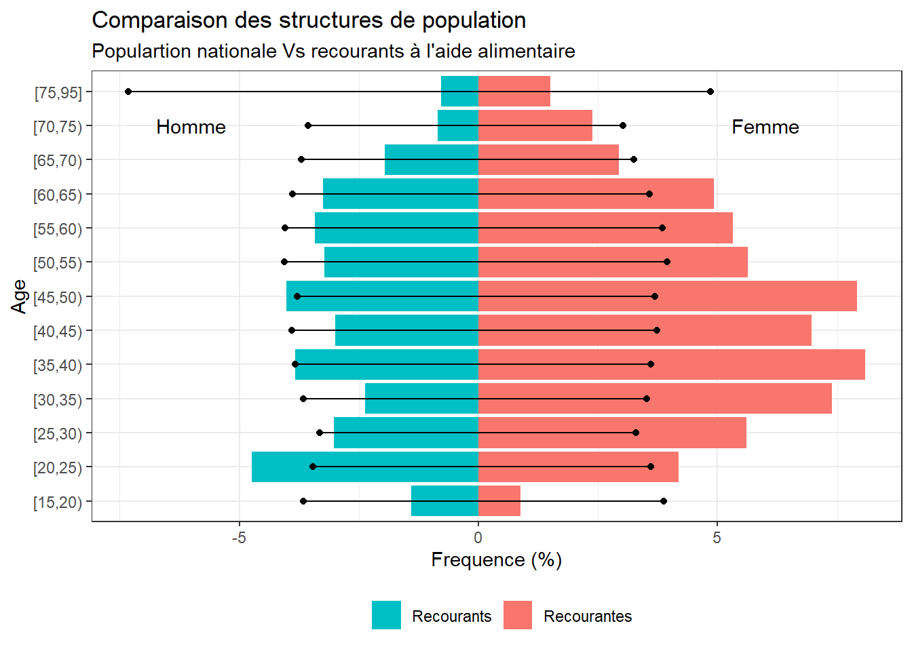

Voir le code
fr <- readxl::read_excel("demo-pop-sexe-age-effectif.xlsx") |> select(-AGEq)
rec <- d |>
select(IDEN_AGE, IDEN_SEXE, PONDPP) |>
mutate(AGEq = cut(IDEN_AGE, include.lowest = TRUE,
right = FALSE, dig.lab = 1,
breaks = c(15, 20, 25, 30,
35, 40, 45, 50,
55, 60, 65, 70,
75, 95))) |>
group_by(AGEq, IDEN_SEXE) |> summarise(n = sum(PONDPP)) |>
ungroup() |>
mutate(freq = n / sum(n)*100) |>
select(-n) |>
pivot_wider(names_from = IDEN_SEXE, values_from = freq) |>
mutate(Homme = Homme*(-1),
AGEq = as.character(AGEq)) |>
select(AGEq, Recourants = Homme, Recourantes = Femme) |> filter(!is.na(AGEq))
tableau <- bind_cols(rec, fr) |> pivot_longer(2:5, names_to = "SEX", values_to = "FREQ")
ggplot() +
geom_col(
data = tableau |> filter(SEX %in% c("Recourants", "Recourantes")),
aes(x = AGEq, y = FREQ, fill = SEX)) +
geom_point(
data = tableau |> filter(SEX %in% c("Hommes", "Femmes")),
aes(x = AGEq, y = FREQ)) +
geom_segment(
data = tableau |> filter(SEX %in% c("Hommes", "Femmes")),
aes(x = AGEq, xend = AGEq,
y = 0, yend = FREQ)) +
coord_flip() +
labs(title = "Comparaison des structures de population",
subtitle = "Populartion nationale Vs recourants à l'aide alimentaire")+
xlab("Age") +
ylab("Frequence (%)") +
guides(fill = guide_legend(reverse = TRUE))+
theme_bw() +
theme(legend.position = "bottom",
legend.title = element_blank()) +
annotate("text", x = 12, y = -6, label = "Homme")+
annotate("text", x = 12, y = 6, label = "Femme")